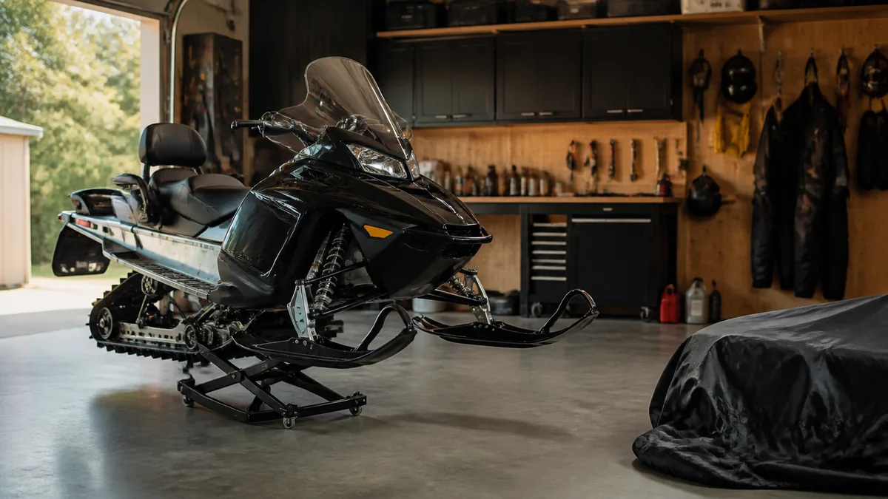

СНЕГОХОДЫ · 12
Консервация снегохода после зимы
Правильное завершение сезона защищает двигатель, топливную систему и подвеску в период простоя.

После последней поездки
- Вымойте и высушите снегоход, очистите радиаторы и подвеску от снега, соли и грязи.
- Проверьте жидкости, топливо и состояние ремня; выполните работы по регламенту производителя.
- Снимите аккумулятор и храните его в заряженном состоянии.
Хранение
Выберите сухое проветриваемое помещение. Приподнимите технику, если это предусмотрено инструкцией, и не закрывайте её влажным тентом.
Защита в период простоя
После мойки высушите скрытые зоны, разъёмы и крепёж. Защитные составы наносят только на предусмотренные поверхности, не загрязняя тормоза, ремень и элементы сцепления.
Подготовка к зиме
- Проверьте заряд аккумулятора и жидкости.
- Осмотрите тормоза, гусеницу и подвеску.
- Сделайте короткий контрольный пробег.
Полезно после проверки
При постановке на хранение оставьте доступ к технике для периодического осмотра. Плотно зажатый у стены снегоход сложнее проверить и подготовить к следующему сезону.